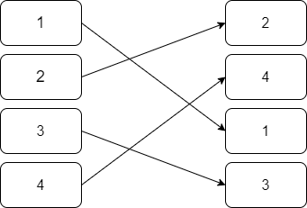

Metamorphism
Metamorphism can be also defined as polymorphism with polymorphism applied
to the decryptor/header
There are different ways to implement metamorphism:
•
Garbage
Insertion Garbage data/instructions are inserted into the code, e.g.: NOP instructions (0x90) are
inserted
•
Register Exchange The registers are exchanged in all the instructions
•
Permutation of Code Blocks In
this type of mutation, code blocks are randomly shuffled and then fixed up, so that the execution logic is still the
same
•
Insertion of jump
instructions Some malware mutate by inserting jumps after instructions (the instruction is also
relocated), so that the code flow does not change
•
Instruction substitution In this type of mutation,
one instruction (or set of instructions) are replaced by 1 or more different instructions which are functionally
equivalent to the replaced set.
•
Code Integration with host the malware modifies the
target executable( which is being infected) by spraying its code in regions of the
EXE.
Bibliography:
Bashari
Rad, Babak & Masrom, Maslin. (2010). Metamorphic Virus Variants Classification Using Opcode Frequency
Histogram. Computing Research Repository - CORR. 1.